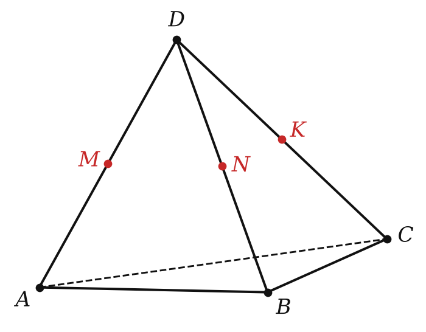

Рабочий лист · урок 2
Параллельность прямых, прямой и плоскости
ИмяДата
1Вспомни и допиши
- Две прямые в пространстве называются параллельными, если они лежат в и .
- Если одна из двух параллельных прямых пересекает плоскость, то .
- Если две прямые параллельны третьей прямой, то .
- Если прямая, не лежащая в плоскости, параллельна какой-нибудь прямой, , то она параллельна данной плоскости.
- Если плоскость проходит через прямую, параллельную другой плоскости, и пересекает её, то линия пересечения .
2Верно или неверно?
| Две прямые, не имеющие общих точек, параллельны. | В / Н |
| Если a ∥ b и b ∥ c, то a ∥ c. | В / Н |
| Если прямая параллельна прямой, лежащей в плоскости, то она параллельна этой плоскости. | В / Н |
| Если одна из двух параллельных прямых пересекает плоскость, то и вторая её пересекает. | В / Н |
| Если прямая параллельна плоскости, то она параллельна любой прямой этой плоскости. | В / Н |
3Работаем по чертежу

- Какой прямой параллелен отрезок MN? Почему?
- Параллельна ли прямая MN плоскости ABC? Обоснуйте.
- Найдите периметр треугольника MNK, если AB = 6, BC = 8, AC = 10.
4Реши
- Точка M не лежит в плоскости треугольника ABC; K и L — середины MA и MB. Докажите, что KL ∥ (ABC), и найдите KL, если AB = 14.
- Отрезок AB не пересекает плоскость α. Через A, B и середину C отрезка AB проведены параллельные прямые, пересекающие α в точках A₁, B₁, C₁. Найдите CC₁, если AA₁ = 8, BB₁ = 14.
- Плоскость α параллельна стороне AB треугольника ABC и пересекает стороны AC и BC в точках M и N. Найдите MN, если AM : MC = 2 : 3, AB = 15.
- Прямые a и b параллельны, прямая c пересекает a. Может ли c быть параллельна b?